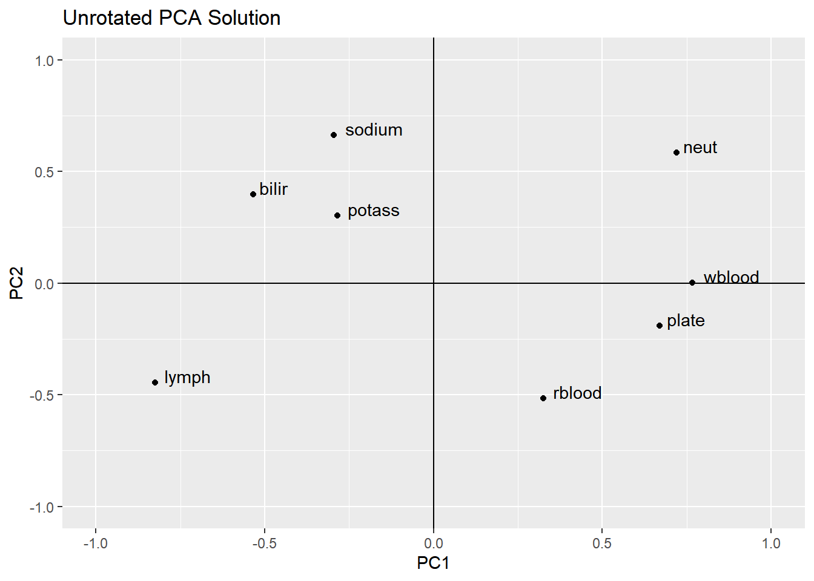
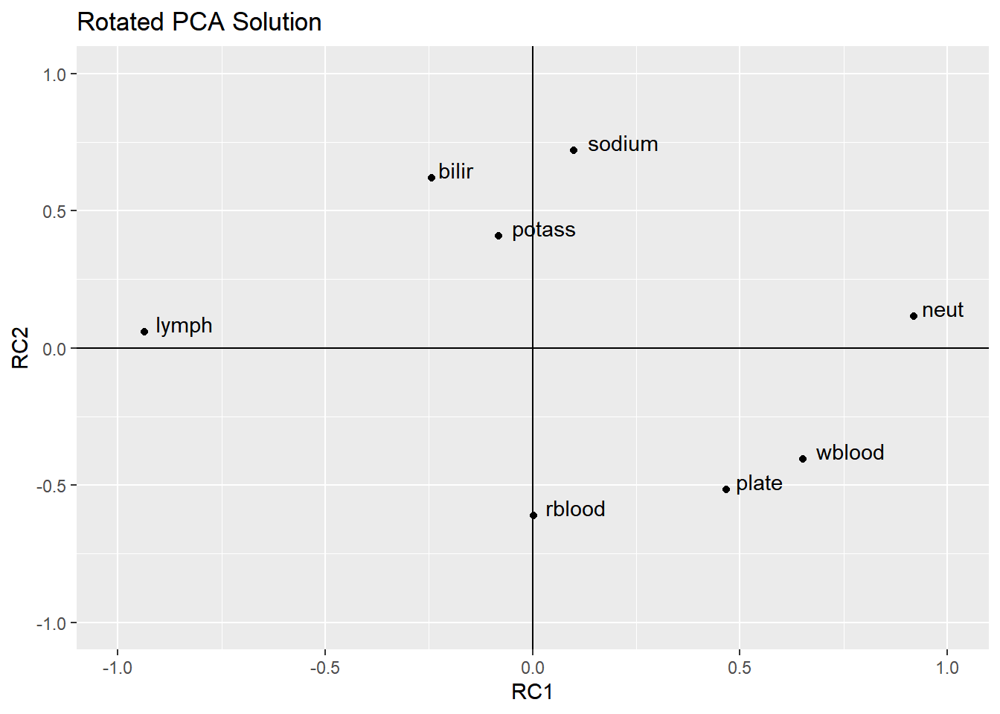

7 Example 1, to see some properties of PCA
Here is the correlation matrix from the chapter. (I simply copied and pasted this and reformatted it, so there might be rounding error discrepancies with what is reported in the chapter.) The N-size is 72 but we do not have individual cases’ data.
varbnames <- c("rblood", "plate", "wblood", "neut", "lymph", "bilir", "sodium", "potass")
blood_corr <- matrix(
c( 1, 0.29, 0.202, -0.055, -0.105, -0.252, -0.229, 0.058,
0.290, 1, 0.415, 0.285, -0.376, -0.349, -0.164, -0.129,
0.202, 0.415, 1, 0.419, -0.521, -0.441, -0.145, -0.076,
-0.055, 0.285, 0.419, 1, -0.877, -0.076, 0.023, -0.131,
-0.105, -0.376, -0.521, -0.877, 1, 0.206, 0.034, 0.151,
-0.252, -0.349, -0.441, -0.076, 0.206, 1, 0.192, 0.077,
-0.229, -0.164, -0.145, 0.023, 0.034, 0.192, 1, 0.423,
0.058, -0.129, -0.076, -0.131, 0.151, 0.077, 0.423, 1),
ncol = 8, byrow = TRUE,
dimnames = list(varbnames, varbnames) )
blood_sd <- c(0.371, 41.253, 1.935, 0.077, 0.071, 4.037, 2.732, 0.297)
names(blood_sd) <- varbnamesLet’s print the correlation matrix to be sure it is what we expect:
## rblood plate wblood neut lymph bilir sodium potass
## rblood 1.000 0.290 0.202 -0.055 -0.105 -0.252 -0.229 0.058
## plate 0.290 1.000 0.415 0.285 -0.376 -0.349 -0.164 -0.129
## wblood 0.202 0.415 1.000 0.419 -0.521 -0.441 -0.145 -0.076
## neut -0.055 0.285 0.419 1.000 -0.877 -0.076 0.023 -0.131
## lymph -0.105 -0.376 -0.521 -0.877 1.000 0.206 0.034 0.151
## bilir -0.252 -0.349 -0.441 -0.076 0.206 1.000 0.192 0.077
## sodium -0.229 -0.164 -0.145 0.023 0.034 0.192 1.000 0.423
## potass 0.058 -0.129 -0.076 -0.131 0.151 0.077 0.423 1.000Here is the vector of standard deviations, which are needed to calculate the covariance matrix, which we only look at for comparison purposes:
## rblood plate wblood neut lymph bilir sodium potass
## 0.371 41.253 1.935 0.077 0.071 4.037 2.732 0.297Given the standard deviations and the correlation matrix, we can get the covariance matrix using some matrix algebra. Recall that to get from covariance to correlation, we divide each cell by the product of the two standard-deviations corresponding to the row and column. Here, we’re going in the opposite direction, so we’re multiplying each cell by the product of the row and column standard deviations. 29 Everitt and Hothorn are using the covariance matrix for demonstration of the difference between covariance and correlation—and of what not to do—so we normally wouldn’t care about this if we have the correlation matrix.
## [,1] [,2] [,3] [,4] [,5] [,6] [,7] [,8]
## [1,] 0.14 4.44 0.15 0.00 0.00 -0.38 -0.23 0.01
## [2,] 4.44 1701.81 33.13 0.91 -1.10 -58.12 -18.48 -1.58
## [3,] 0.15 33.13 3.74 0.06 -0.07 -3.44 -0.77 -0.04
## [4,] 0.00 0.91 0.06 0.01 0.00 -0.02 0.00 0.00
## [5,] 0.00 -1.10 -0.07 0.00 0.01 0.06 0.01 0.00
## [6,] -0.38 -58.12 -3.44 -0.02 0.06 16.30 2.12 0.09
## [7,] -0.23 -18.48 -0.77 0.00 0.01 2.12 7.46 0.34
## [8,] 0.01 -1.58 -0.04 0.00 0.00 0.09 0.34 0.097.1 PCA with Covariance vs. Correlation
We can use a PCA on a covariance matrix, correlation matrix, or the raw data. The correlation matrix is better than the covariance matrix if the observed variables are not on the same scale (which is most of the time). Conducting a PCA on the raw data is useful if we want to save each case’s composite scores and use them later on, say, in a regression or a plot.
Here is the PCA on the covariance matrix, which is on the original scale of the variables. The results of this are reported on Page 67 of the chapter.
## Importance of components:
## Comp.1 Comp.2 Comp.3 Comp.4 Comp.5 Comp.6
## Standard deviation 41.2877486 3.880212624 2.64197339 1.624583979 0.353951757 2.561722e-01
## Proportion of Variance 0.9856182 0.008705172 0.00403574 0.001525986 0.000072436 3.794288e-05
## Cumulative Proportion 0.9856182 0.994323381 0.99835912 0.999885108 0.999957544 9.999955e-01
## Comp.7 Comp.8
## Standard deviation 8.510631e-02 2.372715e-02
## Proportion of Variance 4.187837e-06 3.255049e-07
## Cumulative Proportion 9.999997e-01 1.000000e+00
##
## Loadings:
## Comp.1 Comp.2 Comp.3 Comp.4 Comp.5 Comp.6 Comp.7 Comp.8
## [1,] 0.943 0.329
## [2,] 0.999
## [3,] 0.192 0.981
## [4,] 0.758 0.650
## [5,] -0.649 0.760
## [6,] -0.961 0.195 0.191
## [7,] -0.193 -0.979
## [8,] 0.329 -0.942In this output under the label Loadings:, the eigenvector coefficients with very low absolute values (less than 0.10, it seems) are left blank in the printout. These coefficients actually do exist, and we can see them if we ask for them using blood_pcacov$loadings[1:64], where 64 is the number of cells in the eigenvector matrix (8 eigenvectors across 8 items).
What do you notice about the first component? How much of the total variance does it explain? Which observed variables have the largest coefficients? (Refer back to the standard deviations of the raw data and look at which variable seems to have a much larger scale, as reflected by the standard deviations.)
And, for comparison, here is the PCA on the correlation matrix, which is the preferred method.
## Importance of components:
## Comp.1 Comp.2 Comp.3 Comp.4 Comp.5 Comp.6 Comp.7
## Standard deviation 1.6710100 1.2375848 1.1177138 0.88227419 0.78839505 0.69917350 0.66002394
## Proportion of Variance 0.3490343 0.1914520 0.1561605 0.09730097 0.07769584 0.06110545 0.05445395
## Cumulative Proportion 0.3490343 0.5404863 0.6966468 0.79394778 0.87164363 0.93274908 0.98720303
## Comp.8
## Standard deviation 0.31996216
## Proportion of Variance 0.01279697
## Cumulative Proportion 1.00000000
##
## Loadings:
## Comp.1 Comp.2 Comp.3 Comp.4 Comp.5 Comp.6 Comp.7 Comp.8
## rblood 0.194 0.417 0.400 0.652 0.175 0.363 0.176 0.102
## plate 0.400 0.154 0.168 -0.848 -0.230 -0.110
## wblood 0.459 0.168 -0.274 0.251 -0.403 0.677
## neut 0.430 -0.472 -0.171 0.169 0.118 -0.237 0.678
## lymph -0.494 0.360 -0.180 -0.139 -0.136 0.157 0.724
## bilir -0.319 -0.320 -0.277 0.633 -0.162 -0.384 0.377
## sodium -0.177 -0.535 0.410 -0.163 -0.299 0.513 0.367
## potass -0.171 -0.245 0.709 0.198 -0.469 -0.376Notice how the correlation matrix has a very different proportion of variance being explained by the first component and that several of the observed variables are contributing to that component. This is very different from what we observed with the covariance matrix. In a correlation matrix, all of the variables are treated equally, being placed on the same scale that is bound between -1 and +1, which in turn provides a more accurate estimate of the components.
7.2 Unscaled eigenvectors
Note that what the princomp() function labels as “loadings” are actually the unscaled eigenvectors. To get the rescaled eigenvectors, which are more appropriate for interpreting the components, and which are what analysts from a factor-analysis tradition call loadings, we use the equation at the bottom of Page 70 in the chapter:
\[\mathbf{a}^*_i = \mathbf{a}_i\sqrt{\lambda}_i \] where \(i\) refers to the component number—in this example we have eight possible components. Following Everitt and Hothorn’s labeling system, \(\mathbf{a}_i\) represents the eigenvector for component \(i\), and the rescaled eigenvector has an asterisk. Also, the lowercase lambda, \(\lambda_i\), represents the eigenvalue of component \(i\). If we stuck these eight columns of vectors side-by-side in a matrix, we have a matrix of eigenvectors, \(\mathbf{A}\) and \(\mathbf{A^*}\), for the unscaled and scaled eigenvectors respectively (described on pp. 70–71 in the chapter).
Here are the eight eigenvectors, as they’re reported in the princomp() function under each column, labeled by the component. (Again, these are not loadings—they’re unscaled eigenvectors.)
##
## Loadings:
## Comp.1 Comp.2 Comp.3 Comp.4 Comp.5 Comp.6 Comp.7 Comp.8
## rblood 0.194 0.417 0.400 0.652 0.175 0.363 0.176 0.102
## plate 0.400 0.154 0.168 -0.848 -0.230 -0.110
## wblood 0.459 0.168 -0.274 0.251 -0.403 0.677
## neut 0.430 -0.472 -0.171 0.169 0.118 -0.237 0.678
## lymph -0.494 0.360 -0.180 -0.139 -0.136 0.157 0.724
## bilir -0.319 -0.320 -0.277 0.633 -0.162 -0.384 0.377
## sodium -0.177 -0.535 0.410 -0.163 -0.299 0.513 0.367
## potass -0.171 -0.245 0.709 0.198 -0.469 -0.376
##
## Comp.1 Comp.2 Comp.3 Comp.4 Comp.5 Comp.6 Comp.7 Comp.8
## SS loadings 1.000 1.000 1.000 1.000 1.000 1.000 1.000 1.000
## Proportion Var 0.125 0.125 0.125 0.125 0.125 0.125 0.125 0.125
## Cumulative Var 0.125 0.250 0.375 0.500 0.625 0.750 0.875 1.000The eigenvalues are available from the output, as well. The $sdev includes the standard deviations of each component (based on the unscaled eigenvector coefficients). If we square those, we have the component’s variance, or eigenvalue. There are eight eigenvalues—one for each component and these represent the repackaged variances when we create these components from the variables.
## Comp.1 Comp.2 Comp.3 Comp.4 Comp.5 Comp.6 Comp.7 Comp.8
## 2.7922743 1.5316161 1.2492841 0.7784077 0.6215668 0.4888436 0.4356316 0.1023758The components with higher eigenvalues explain more variability in the data. The first component, (which is the “principal” component that Pearson originally looked at), explains most of the variability in our data set.
7.3 Looking at the properties of eigenvectors and eigenvalues
Our handy R calculator has done the work in obtaining the eigenvectors and eigenvalues for us. The eigenvectors are the weights, analogous to regression coefficients; the eigenvalues represent the variance of the component, with higher values representing a stronger component. To obtain the eigenvectors, two constraints had to be in place:
- The sum of the squared coefficients is one, \(\mathbf{a}_i\prime\mathbf{a}_i = 1\).
- The cross-products of each eigenvector is zero, \(\mathbf{a}_i\prime\mathbf{a}_j = 0 \text{, where } j > i\).
Let’s check this out:
Here’s our first eigenvector:
## rblood plate wblood neut lymph bilir sodium potass
## 0.1942203 0.4003625 0.4588793 0.4303359 -0.4937748 -0.3194549 -0.1768857 -0.1705160Does \(\mathbf{a}_1\prime\mathbf{a}_1 = 1\)?
In other words, does
\[\begin{bmatrix} 0.19 & 0.40 & 0.46 & 0.43 & -0.49 & -0.32 & -0.18 & -0.17 \end{bmatrix} \begin{bmatrix} 0.19 \\ 0.40 \\ 0.46 \\ 0.43 \\ -0.49 \\ -0.32 \\ -0.18 \\ -0.17 \end{bmatrix} = 1 \text{ ?}\]
## [,1]
## [1,] 1It does.
Here’s our second eigenvector:
## rblood plate wblood neut lymph bilir sodium
## 0.4171230843 0.1539289974 -0.0002984974 -0.4724424229 0.3604497505 -0.3201664742 -0.5352734751
## potass
## -0.2452834631Does \(\mathbf{a}_2\prime\mathbf{a}_2 = 1\)?
## [,1]
## [1,] 1It does. This also sums to 1.
Okay, how about their cross-products: Does
\[\begin{bmatrix} 0.19 & 0.40 & 0.46 & 0.43 & -0.49 & -0.32 & -0.18 & -0.17 \end{bmatrix} \begin{bmatrix} 0.42 \\ 0.15 \\ 0.00 \\ -0.47 \\ 0.36 \\ -0.32 \\ -0.54 \\ -0.25 \end{bmatrix} = 0 \text{ ?}\]
## [,1]
## [1,] 0Indeed it does.
This latter condition ensures that the components are orthogonal—that is, unrelated.
We only checked the first two components, but we would find the same results with the rest.
7.3.1 Eigenvalues add up to total observed variance
We can also see that the sum of the eigenvalues (\(\lambda_1\) through \(\lambda_8\)) equals the sum of the variances of the observed variables. In other words, does
\[\sum{\lambda_i = s^2_1 + s^2_2 + \cdots + s^2_p} \text{ ?}\]
In our case, we fit the PCA to the data’s correlation matrix, which includes 1 on the diagonal, meaning that the variables are scaled to have a variance (and standard deviation) of 1. With that, the sum of our eigenvalues (before we reduce the number of components) should be the number of variables.
So we can ask whether the sum of the eigenvalues is 8, given that we have eight variables.
## [1] 8This demonstrates that the amount of variance is the same as it is in our original data, just repackaged.
7.3.2 Each component’s proportion of variance
What is the proportion of variance that each component explains? Given that we know the total variance, and each eigenvalue, we can use this code:
## Comp.1 Comp.2 Comp.3 Comp.4 Comp.5 Comp.6 Comp.7 Comp.8
## 0.349 0.191 0.156 0.097 0.078 0.061 0.054 0.013If we look up above to the results of summary(blood_pcacor, loadings = TRUE), we see these same values reported in the Proportion of Variance row.
7.3.3 Rescaling the eigenvectors
Let’s calculate the rescaled eigenvalues so they can be more easily interpreted. These coefficients represent the correlation between the observed variable and the component. These are what are outputted in SPSS and in the psych package’s pca() function, which we’ll use for our actual analysis. First, let’s calculate
\[\mathbf{a}^*_i = \mathbf{a}_i\sqrt{\lambda}_i \]
We could get the unscaled eigenvalues from the princomp() object using blood_pcacor$loadings[1:64] but that is less convenient (and not as easily reproducible in R code). Instead, we can use the eigen() function on the correlation matrix to get each component’s eigenvector and eigenvalue.
## eigen() decomposition
## $values
## [1] 2.7922743 1.5316161 1.2492841 0.7784077 0.6215668 0.4888436 0.4356316 0.1023758
##
## $vectors
## [,1] [,2] [,3] [,4] [,5] [,6] [,7] [,8]
## [1,] -0.1942203 0.4171230843 0.39976114 0.65159275 0.1752060 0.36281561 0.1763116 -0.10240413
## [2,] -0.4003625 0.1539289974 0.16772869 0.06371996 -0.8476003 -0.23041340 -0.1104646 -0.01017235
## [3,] -0.4588793 -0.0002984974 0.16777536 -0.27379988 0.2512311 -0.40295337 0.6769694 -0.05038622
## [4,] -0.4303359 -0.4724424229 -0.17128192 0.16914858 0.1177228 0.06459323 -0.2367450 -0.67792429
## [5,] 0.4937748 0.3604497505 0.08716408 -0.18037205 -0.1389990 -0.13572092 0.1572459 -0.72364606
## [6,] 0.3194549 -0.3201664742 -0.27661854 0.63331424 -0.1615438 -0.38374488 0.3765128 0.05214312
## [7,] 0.1768857 -0.5352734751 0.41027697 -0.16314269 -0.2988956 0.51279925 0.3670544 -0.01484605
## [8,] 0.1705160 -0.2452834631 0.70861094 0.08690517 0.1978511 -0.46913476 -0.3757113 0.02620828Let’s plug these into our equation, \(\mathbf{a}^*_i = \mathbf{a}_i\sqrt{\lambda}_i\). We could do each rescaled eigenvector at a time, or we could use this fancy matrix operation.
## [,1] [,2] [,3] [,4] [,5] [,6] [,7] [,8]
## [1,] -0.32 0.52 0.45 0.57 0.14 0.25 0.12 -0.03
## [2,] -0.67 0.19 0.19 0.06 -0.67 -0.16 -0.07 0.00
## [3,] -0.77 0.00 0.19 -0.24 0.20 -0.28 0.45 -0.02
## [4,] -0.72 -0.58 -0.19 0.15 0.09 0.05 -0.16 -0.22
## [5,] 0.83 0.45 0.10 -0.16 -0.11 -0.09 0.10 -0.23
## [6,] 0.53 -0.40 -0.31 0.56 -0.13 -0.27 0.25 0.02
## [7,] 0.30 -0.66 0.46 -0.14 -0.24 0.36 0.24 0.00
## [8,] 0.28 -0.30 0.79 0.08 0.16 -0.33 -0.25 0.01In this code, the diag(sqrt(vals.and.vects$values)) is the square root of each component’s eigenvalue placed on the diagonal in a square matrix, which has zeros on the off-diagonal. With our data, the eigenvalue diagonal matrix (before square-rooting) looks like this, with capital lambda, \(\mathbf{\Lambda}\), being used to symbolize it given that each element on the diagonal is a little lambda \(\lambda_i\):
\[ \mathbf{\Lambda} = \begin{bmatrix} 2.79 & 0 & 0 & 0 & 0 & 0 & 0 & 0\\ 0 & 1.53 & 0 & 0 & 0 & 0 & 0 & 0\\ 0 & 0 & 1.25 & 0 & 0 & 0 & 0 & 0\\ 0 & 0 & 0 & 0.78 & 0 & 0 & 0 & 0\\ 0 & 0 & 0 & 0 & 0.62 & 0 & 0 & 0\\ 0 & 0 & 0 & 0 & 0 & 0.49 & 0 & 0\\ 0 & 0 & 0 & 0 & 0 & 0 & 0.44 & 0\\ 0 & 0 & 0 & 0 & 0 & 0 & 0 & 0.10 \end{bmatrix} \]
This is also represented as \(\mathbf{\lambda} \mathbf{I}\) because multiplying the vector of eigenvalues by a \(p \times p\) identity matrix will give the same result as diag(eigenvalues).
Again, we’re using the square roots of the diagonal, diag(sqrt(vals.and.vects$values)):
\[ \begin{bmatrix}
\sqrt{2.79} & 0 & 0 & 0 & 0 & 0 & 0 & 0\\
0 & \sqrt{1.53} & 0 & 0 & 0 & 0 & 0 & 0\\
0 & 0 & \sqrt{1.25} & 0 & 0 & 0 & 0 & 0\\
0 & 0 & 0 & \sqrt{0.78} & 0 & 0 & 0 & 0\\
0 & 0 & 0 & 0 & \sqrt{0.62} & 0 & 0 & 0\\
0 & 0 & 0 & 0 & 0 & \sqrt{0.49} & 0 & 0\\
0 & 0 & 0 & 0 & 0 & 0 & \sqrt{0.44} & 0\\
0 & 0 & 0 & 0 & 0 & 0 & 0 & \sqrt{0.10}
\end{bmatrix} \]
When we matrix-multiply the matrix of unscaled eigenvectors (vals.and.vects$vectors) by this diagonal matrix, each eigenvector cell is multiplied by its respective component’s \(\sqrt{\text{eigenvalue}}\) and placed into its corresponding cell in the resulting matrix, which contains our rescaled eigenvectors (\(\mathbf{a}^*_i\)), AKA “loadings”.
This is the set of coefficients that represents the correlation between the observed variable and the component.
7.3.4 Reproducing the covariance (or correlation) matrix
We can reproduce the matrix from which we performed the principal components analysis on (in this case, the correlation matrix) using the equation at the top of Page 71 in the chapter:
\[\mathbf{S} = \mathbf{A^*}\mathbf{A^*}^\prime \]
## [,1] [,2] [,3] [,4] [,5] [,6] [,7] [,8]
## [1,] 1.000 0.290 0.202 -0.055 -0.105 -0.252 -0.229 0.058
## [2,] 0.290 1.000 0.415 0.285 -0.376 -0.349 -0.164 -0.129
## [3,] 0.202 0.415 1.000 0.419 -0.521 -0.441 -0.145 -0.076
## [4,] -0.055 0.285 0.419 1.000 -0.877 -0.076 0.023 -0.131
## [5,] -0.105 -0.376 -0.521 -0.877 1.000 0.206 0.034 0.151
## [6,] -0.252 -0.349 -0.441 -0.076 0.206 1.000 0.192 0.077
## [7,] -0.229 -0.164 -0.145 0.023 0.034 0.192 1.000 0.423
## [8,] 0.058 -0.129 -0.076 -0.131 0.151 0.077 0.423 1.000We can get the residual covariance matrix from this by subtracting the reproduced covariance from the original covariance (or correlations in this case):
## rblood plate wblood neut lymph bilir sodium potass
## rblood 0 0 0 0 0 0 0 0
## plate 0 0 0 0 0 0 0 0
## wblood 0 0 0 0 0 0 0 0
## neut 0 0 0 0 0 0 0 0
## lymph 0 0 0 0 0 0 0 0
## bilir 0 0 0 0 0 0 0 0
## sodium 0 0 0 0 0 0 0 0
## potass 0 0 0 0 0 0 0 0This reproduced correlation is indeed the same as our raw correlation matrix. (If we had conducted the PCA on the covariance matrix, it would return the covariance matrix). This demonstrates that the linear recombination of the variables stil represents the covariance of the raw data.
But, what if we used only seven of those components instead of all eight? Our reproduced covariance or correlation matrix will be very similar, but not identical to, the original matrix because that last component was explaining some proportion of the variance. Now, we see some residuals. The seven components do not perfectly explain the data.
## rblood plate wblood neut lymph bilir sodium potass
## rblood 0.001 0.000 0.001 0.007 0.008 -0.001 0.000 0.000
## plate 0.000 0.000 0.000 0.001 0.001 0.000 0.000 0.000
## wblood 0.001 0.000 0.000 0.003 0.004 0.000 0.000 0.000
## neut 0.007 0.001 0.003 0.047 0.050 -0.004 0.001 -0.002
## lymph 0.008 0.001 0.004 0.050 0.054 -0.004 0.001 -0.002
## bilir -0.001 0.000 0.000 -0.004 -0.004 0.000 0.000 0.000
## sodium 0.000 0.000 0.000 0.001 0.001 0.000 0.000 0.000
## potass 0.000 0.000 0.000 -0.002 -0.002 0.000 0.000 0.000When we reduce the data to fewer components, we’re seeking parsimony while capitalizing on the optimal linear combinations of the variables, but we are not perfectly explaining the data.
7.3.5 Summary of the vectors and matrices
We have the following vectors and matrices:
\(\mathbf{a}_i\) An eigenvector. \(\mathbf{a}_1\) is eigenvector 1, \(\mathbf{a}_2\) is eigenvector 2, and so forth
\(\mathbf{A}\) A matrix of eigenvectors. Column 1 is eigenvector 1. Column 2 is eigenvector 2, and so forth
\(\mathbf{a}^*_i\) A rescaled eigenvector, so we can interpret the coefficients as correlations (or so-called loadings)
\(\mathbf{A}^*\) A matrix of rescaled eigenvectors
\(\mathbf{\lambda_i}\) Lowercase lambda, the eigenvalue of Component \(i\)
\(\mathbf{\Lambda}\) Uppercase lambda, a diagonal matrix of eigenvalues, also represented as \(\mathbf{\lambda} \mathbf{I}\)
\(\mathbf{S}\) The covariance matrix of the observed data
\(\mathbf{R}\) The correlation matrix of the observed data
It is worth noting that correlation, eigenvectors, and eigenvalues are all related:
An eigenvalue matrix is related to the eigevectors and correlation matrix, \(\mathbf{\Lambda} = \mathbf{A}^\prime \mathbf{R} \mathbf{A}\)
## [,1] [,2] [,3] [,4] [,5] [,6] [,7] [,8]
## [1,] 2.79 0.00 0.00 0.00 0.00 0.00 0.00 0.0
## [2,] 0.00 1.53 0.00 0.00 0.00 0.00 0.00 0.0
## [3,] 0.00 0.00 1.25 0.00 0.00 0.00 0.00 0.0
## [4,] 0.00 0.00 0.00 0.78 0.00 0.00 0.00 0.0
## [5,] 0.00 0.00 0.00 0.00 0.62 0.00 0.00 0.0
## [6,] 0.00 0.00 0.00 0.00 0.00 0.49 0.00 0.0
## [7,] 0.00 0.00 0.00 0.00 0.00 0.00 0.44 0.0
## [8,] 0.00 0.00 0.00 0.00 0.00 0.00 0.00 0.1A correlation is reproduced from the eigenvectors and eigenvalues, \(\mathbf{R} = \mathbf{A} \mathbf{\Lambda} \mathbf{A}^\prime\), or \(\mathbf{R} = (\mathbf{A} \mathbf{\Lambda^{1/2}})( \mathbf{\Lambda^{1/2}} \mathbf{A}^\prime)\)
## [,1] [,2] [,3] [,4] [,5] [,6] [,7] [,8]
## [1,] 1.00 0.29 0.20 -0.06 -0.11 -0.25 -0.23 0.06
## [2,] 0.29 1.00 0.42 0.29 -0.38 -0.35 -0.16 -0.13
## [3,] 0.20 0.42 1.00 0.42 -0.52 -0.44 -0.15 -0.08
## [4,] -0.06 0.28 0.42 1.00 -0.88 -0.08 0.02 -0.13
## [5,] -0.11 -0.38 -0.52 -0.88 1.00 0.21 0.03 0.15
## [6,] -0.25 -0.35 -0.44 -0.08 0.21 1.00 0.19 0.08
## [7,] -0.23 -0.16 -0.15 0.02 0.03 0.19 1.00 0.42
## [8,] 0.06 -0.13 -0.08 -0.13 0.15 0.08 0.42 1.007.4 Using the psych package
The psych package’s pca() function reports results that are ready for interpretation. It automatically uses the correlation matrix rather than the covariance matrix.
We specify the correlation matrix or the raw data, the number of factors we wish to extract, which in a preliminary analysis is the number of observed variables (8 in our example). In PCA, we can avoid rotating the solution for now.
library(psych)
pc_psy <- psych::pca(blood_corr, # can also use the raw data as input.
nfactors = 8,
rotate = 'none')
print(pc_psy,digits=2)## Principal Components Analysis
## Call: principal(r = r, nfactors = nfactors, residuals = residuals,
## rotate = rotate, n.obs = n.obs, covar = covar, scores = scores,
## missing = missing, impute = impute, oblique.scores = oblique.scores,
## method = method, use = use, cor = cor, correct = 0.5, weight = NULL)
## Standardized loadings (pattern matrix) based upon correlation matrix
## PC1 PC2 PC3 PC4 PC5 PC6 PC7 PC8 h2 u2 com
## rblood 0.32 -0.52 0.45 0.57 -0.14 -0.25 0.12 0.03 1 -4.4e-16 4.2
## plate 0.67 -0.19 0.19 0.06 0.67 0.16 -0.07 0.00 1 1.1e-15 2.5
## wblood 0.77 0.00 0.19 -0.24 -0.20 0.28 0.45 0.02 1 1.4e-15 2.5
## neut 0.72 0.58 -0.19 0.15 -0.09 -0.05 -0.16 0.22 1 2.0e-15 2.6
## lymph -0.83 -0.45 0.10 -0.16 0.11 0.09 0.10 0.23 1 6.7e-16 2.0
## bilir -0.53 0.40 -0.31 0.56 0.13 0.27 0.25 -0.02 1 1.8e-15 4.5
## sodium -0.30 0.66 0.46 -0.14 0.24 -0.36 0.24 0.00 1 1.8e-15 3.7
## potass -0.28 0.30 0.79 0.08 -0.16 0.33 -0.25 -0.01 1 2.8e-15 2.4
##
## PC1 PC2 PC3 PC4 PC5 PC6 PC7 PC8
## SS loadings 2.79 1.53 1.25 0.78 0.62 0.49 0.44 0.10
## Proportion Var 0.35 0.19 0.16 0.10 0.08 0.06 0.05 0.01
## Cumulative Var 0.35 0.54 0.70 0.79 0.87 0.93 0.99 1.00
## Proportion Explained 0.35 0.19 0.16 0.10 0.08 0.06 0.05 0.01
## Cumulative Proportion 0.35 0.54 0.70 0.79 0.87 0.93 0.99 1.00
##
## Mean item complexity = 3
## Test of the hypothesis that 8 components are sufficient.
##
## The root mean square of the residuals (RMSR) is 0
##
## Fit based upon off diagonal values = 1The output under the label Standardized loadings is the same reweighted eigenvector matrix, \(\mathbf{A^*}\), we calculated above. Again, these represent the correlations between each observed variable and each component.
7.5 Determining how many components to retain
One of the most valuable reasons for using PCA is for dimension reduction. There are several different methods for determining how many components to retain. Some analysts set the threshold to be sure that they have enough components to explain some pre-specified proportion of variance, such as 80%. Some use Kaiser’s rule of retaining components of values of at least \(1.00\), though Joliffe (1972) suggested a threshold of \(0.70\). Others (Cattell 1966) suggested using a scree plot to see where the elbow in the curve is, though this may be more appropriate for factor analysis rather than PCA. Another is the parallel test. And still another is the Hull test, which can be used if the PCA is on the data set rather than a correlation matrix.
7.5.1 1. Kaiser’s rule
The eigenvalue-greater-than-one approach, also called the K1 criterion named after the Kaiser’s (1974) work, can be used in PCA to determine the number of factors to retain.
##
## Loadings:
## PC1 PC2 PC3 PC4 PC5 PC6 PC7 PC8
## rblood 0.325 -0.516 0.447 0.575 -0.138 -0.254 0.116
## plate 0.669 -0.191 0.187 0.668 0.161
## wblood 0.767 0.188 -0.242 -0.198 0.282 0.447
## neut 0.719 0.585 -0.191 0.149 -0.156 0.217
## lymph -0.825 -0.446 -0.159 0.110 0.104 0.232
## bilir -0.534 0.396 -0.309 0.559 0.127 0.268 0.249
## sodium -0.296 0.662 0.459 -0.144 0.236 -0.359 0.242
## potass -0.285 0.304 0.792 -0.156 0.328 -0.248
##
## PC1 PC2 PC3 PC4 PC5 PC6 PC7 PC8
## SS loadings 2.792 1.532 1.249 0.778 0.622 0.489 0.436 0.102
## Proportion Var 0.349 0.191 0.156 0.097 0.078 0.061 0.054 0.013
## Cumulative Var 0.349 0.540 0.697 0.794 0.872 0.933 0.987 1.000Based on this criterion, we would retain three components, as the eigenvalues, listed in the SS loadings row are above 1.00 in the first three components. If we used 80% of the variance explained as a criterion instead of Kaiser’s rule, we would look at the pca() output at the Cumulative Proportion line and see that we’d need more at least five components, as Component 4 explains 79% of the variance. It’s borderline, but them’s the rules we would have set for ourselves.
7.5.2 2. Scree plot
Let’s generate a scree plot. We can use this to not only see those components with eigenvalues that exceed 1.00 but we can see where the plot levels off.
Though there are packages that can do this for us, we can do this with ggplot.30 First, we create a data frame that includes the component number and the eigenvalue. For this, we can get the eigenvalues from the psych::pca() outputted object with the $values.
vals.and.vects <- data.frame(Component.number = 1:length(pc_psy$values),
Eigenvalue = pc_psy$values)
# Commented out here is the corresponding code if we used the object outputted
# from the `princomp()` function.
# vals.and.vects <- data.frame(Component.number = 1:length(blood_pcacor$sdev^2),
# Eigenvalue = blood_pcacor$sdev^2)
ggplot(vals.and.vects, aes(x = Component.number, y = Eigenvalue ) ) +
geom_line() +
geom_point()
With this plot, we seek to find where the slope changes. The first component is clearly present, as the slope is much steeper from the first to second component than it is from the second to third component, whose slope resembles the rest of the scree. In other words, if we drew a line of best for all of the eigenvalues from Component 2 through 8, such a line would have the points close to it. However, we might decide to retain three components because the eigenvalues after Component 3 seem to flatten out. This is a good example of when this eyeballing technique is not so straightforward.
7.5.3 3. Parallel analysis
The parallel analysis (Horn 1965) provides a method for comparing our data to randomly generated data sets having the same number of cases and observed variables. After ranking these randomly generated data from low to high, the procedure can estimate the eigenvalue at each \(n\)th component at the 95 percentile level. We compare the eigenvalues calculated from our observed data with those of the randomly generated data. If with a given model, such as one with \(n\) components, 95% of the randomly drawn samples have eigenvalues that are lower than what we observe in our data, we can assume that the component structure in our data lies outside that 0-to-95 percent range (in other words, our extreme eigenvalues do not likely to occur by random luck). The last component to meet this criterion is the number of components to retain. Up to that point, the components explain more of the variance than would occur by chance at the 95% cutoff.
We can use the parallel() function from the nFactors package (R-nFactors?) to perform a parallel analysis. The parallel analysis takes random draws of data and estimates the eigenvalues that would occur randomly in each random draw. The mean of the random draws is reported, along with the 95 percentile. We want to use the 95 percentile.
The first step is to compute the eigenvalues, which we did above with the scree plot.
library(nFactors)
# help(package="nFactors")
n_i <- 72 # The number of cases in our data
n_p <- ncol(blood_corr) # The number of variables in our data
set.seed(123) # To reproduce our randomly generated results.
Eigs <- pc_psy$values # The eigenvalues
n_components <- length(Eigs) # number of components
paral <- parallel(subject = n_i, # The number of cases in our data
var = n_p, # The number of variables in our data
rep = 100,
quantile = .95,
model = "components")
ParallelAna <- data.frame(Ncomponent = 1:n_components,
Eigs,
RandEigM = paral$eigen$mevpea,
RandEig95= paral$eigen$qevpea)
ParallelAna <- round(ParallelAna, 3)
ParallelAna## Ncomponent Eigs RandEigM RandEig95
## 1 1 2.792 1.527 1.707
## 2 2 1.532 1.315 1.454
## 3 3 1.249 1.159 1.265
## 4 4 0.778 1.033 1.122
## 5 5 0.622 0.919 0.980
## 6 6 0.489 0.803 0.882
## 7 7 0.436 0.688 0.778
## 8 8 0.102 0.556 0.660Based on these results, it looks like we should retain two components, as explained below.
First, it is worth mentioning that because this operation is based on random draws of the data, the point estimate and 95th percentile estimate will differ if we performed this operation again. In our code, we used the set.seed() function to make this particular result reproducible. We can remove that line of code or change the seed values and observe different results.31
In our output, we can use the rightmost column and identify at what point 95% of the randomly drawn data’s eigenvalues exceed our reduced-eigenvalue estimates. We see that it is at component number \(3\) that our observed reduced eigenvalue (\(1.249\)) is exceeded by the randomly generated eigenvalue (\(1.265\)). Based on this, we step down to one component below this and decide we should retain \(2\) components.
How many should we retain? The parallel analysis might make the most sense with these data, as it is compares random draws. With this, we might retain two components.
7.6 Reduced PCA model
library(psych)
pc_psy <- psych::pca(blood_corr,
nfactors = 2,
rotate = 'none')
print(pc_psy, digits = 3)## Principal Components Analysis
## Call: principal(r = r, nfactors = nfactors, residuals = residuals,
## rotate = rotate, n.obs = n.obs, covar = covar, scores = scores,
## missing = missing, impute = impute, oblique.scores = oblique.scores,
## method = method, use = use, cor = cor, correct = 0.5, weight = NULL)
## Standardized loadings (pattern matrix) based upon correlation matrix
## PC1 PC2 h2 u2 com
## rblood 0.325 -0.516 0.372 0.628 1.68
## plate 0.669 -0.191 0.484 0.516 1.16
## wblood 0.767 0.000 0.588 0.412 1.00
## neut 0.719 0.585 0.859 0.141 1.92
## lymph -0.825 -0.446 0.880 0.120 1.54
## bilir -0.534 0.396 0.442 0.558 1.85
## sodium -0.296 0.662 0.526 0.474 1.38
## potass -0.285 0.304 0.173 0.827 1.99
##
## PC1 PC2
## SS loadings 2.792 1.532
## Proportion Var 0.349 0.191
## Cumulative Var 0.349 0.540
## Proportion Explained 0.646 0.354
## Cumulative Proportion 0.646 1.000
##
## Mean item complexity = 1.6
## Test of the hypothesis that 2 components are sufficient.
##
## The root mean square of the residuals (RMSR) is 0.127
##
## Fit based upon off diagonal values = 0.8237.7 Interpretation
The pysch output is formatted for factor-analysis, which is closely related to PCA but used for a a different purpose (EFA is for estimating latent variables). Here, we have the first two components, PC1 and PC2, the communalities h2, the unique variances, u2, and the complexity, com. These were not explained in our reading but will be in the explanation about exploratory factor analysis. Each observed variable’s communality is the proportion of its variance that is shared with the two factors. If we sum the squared coefficients, we get the communality; for example, with rblood, \(.325^2 + (-.516)^2 = .372\). The unique variance is what is not explained by the shared variance; with this example, it is \(1 - .3718 = .628\). The complexity refers to how strongly the item loads on other components. The last observed variable, potassium, seems to be evenly shared across two components; it’s complexity is 1.99 and we can see that indeed its loadings on PC1 and PC2 are nearly equal in strength. It is easier to interpret models that have low complexity.
These coefficients (or “loadings” to some researchers) are unrotated. In this data set, it seems that the first component is due to a large part from the variability in the lymphocites variable, (-825) as well as to the white blood cell counts, neutrophil levels, platelet counts, bilirubin levels, and to a small extent red blood cell counts. The component seems to be explained in one direction by lymphocyte levels and bilirubin levels and in the opposite direction from the others.32
The second component seems to be an indicator of levels of sodium, neutrophil, red blood cells, lymphocytes, bilirubin, and to a small extent, potassium, with different signs among these. Interpreting these is not easy because the components do not seem to parsimoniously explain the observed variables. When this occurs, many analysts will rotate the solution so that the components more easily align with the variables; others will disagree and state that this changes the structure.
7.7.1 Plot
Let’s create a plot of the component scores.
To prepare for this, let’s save the rescaled eigenvector matrix (the loadings). We’ll use the cbind() function on the $loadings part of the outputted object from our PCA model.
## PC1 PC2
## rblood 0.3245441 -0.5162251871
## plate 0.6690097 -0.1905001868
## wblood 0.7667919 0.0003694159
## neut 0.7190955 0.5846875596
## lymph -0.8251026 -0.4460871309
## bilir -0.5338122 0.3962331606
## sodium -0.2955777 0.6624463145
## potass -0.2849339 0.3035590847A %>%
data.frame(.) %>%
ggplot(aes(x = PC1, y = PC2)) +
geom_vline( aes(xintercept = 0) ) +
geom_hline( aes(yintercept = 0) ) +
geom_point() +
scale_x_continuous(limits=c(-1,1)) +
scale_y_continuous(limits=c(-1,1)) +
geom_text(hjust=-.2, vjust=0, label = rownames(A)) +
labs( title = "Unrotated PCA Solution")
This kind of plot helps us to see which variables are more strongly explaining which component. Those closest to the horizontal axis and farther away from the origin are more strongly contributing to Component 1. Those closer to the vertical axis and farther away from the origin more strongly explain Component 2, which in this case does not seem to include many; sodium is the strongest one with Component 2.
7.8 Interpretation of the rotated solution
Some researchers caution against rotating the solution, as it changes structure. Others argue for it, as it helps us to explain the components. We specify rotate = varimax for varimax rotation so that the PCA solution remains orthogonal; that is, so that the components do not correlate with each other but rather explain unrelated features of the combination of variables.33 This type of orthogonal rotation is probably fine with data that are assumed to exist in the world rather. With data that are based on social or psychological constructions, such as academic proficiency, orthogonal rotation makes less sense.
library(psych)
pc_psy_rot <- psych::pca(blood_corr,
nfactors = 2,
rotate = 'varimax')
print(pc_psy_rot, digits = 3)## Principal Components Analysis
## Call: principal(r = r, nfactors = nfactors, residuals = residuals,
## rotate = rotate, n.obs = n.obs, covar = covar, scores = scores,
## missing = missing, impute = impute, oblique.scores = oblique.scores,
## method = method, use = use, cor = cor, correct = 0.5, weight = NULL)
## Standardized loadings (pattern matrix) based upon correlation matrix
## RC1 RC2 h2 u2 com
## rblood 0.003 -0.610 0.372 0.628 1.00
## plate 0.467 -0.515 0.484 0.516 1.98
## wblood 0.651 -0.405 0.588 0.412 1.67
## neut 0.919 0.116 0.859 0.141 1.03
## lymph -0.936 0.058 0.880 0.120 1.01
## bilir -0.244 0.619 0.442 0.558 1.30
## sodium 0.099 0.719 0.526 0.474 1.04
## potass -0.081 0.408 0.173 0.827 1.08
##
## RC1 RC2
## SS loadings 2.440 1.884
## Proportion Var 0.305 0.235
## Cumulative Var 0.305 0.540
## Proportion Explained 0.564 0.436
## Cumulative Proportion 0.564 1.000
##
## Mean item complexity = 1.3
## Test of the hypothesis that 2 components are sufficient.
##
## The root mean square of the residuals (RMSR) is 0.127
##
## Fit based upon off diagonal values = 0.823In this rotated structure, we see it is easier to give a label to the first component as being explained by lymphocyte and neutrophil levels (in opposite directions), and white blood cell and platelet counts.
A_rot <- cbind(pc_psy_rot$loadings)
A_rot %>%
data.frame(.) %>%
ggplot(aes(x = RC1, y = RC2)) +
geom_vline( aes(xintercept = 0) ) +
geom_hline( aes(yintercept = 0) ) +
geom_point() +
scale_x_continuous(limits=c(-1,1)) +
scale_y_continuous(limits=c(-1,1)) +
geom_text(hjust=-.2, vjust=0, label = rownames(A)) +
labs( title = "Rotated PCA Solution") In this plot, the variables all remain in same space relative to each other. It is the component axes that have moved. In comparing this to the unrotated solution, it looks like we rotated the axes about 45 degrees.
We see that with the rotated solution, the axes of the components have been moved closer to the observed variables, thereby reducing their complexity and making it easier to associate some variables with individual components. This comes at a cost, however, as we also see that now, compared to our unrotated model, the platelet and white-blood cell variables are now somewhere in between the two components. Their complexities are now high whereas before in the unrotated model, they were low because they were both close to the first component axis (the horizontal axis). Whether to rotate or not is a decision made by the researcher. In the social sciences, we tend to rotate the components, though in the social sciences, we should not usually use PCA because we tend to think more about latent constructs, which are best estimated using EFA.
References
We can also be lazy and use the
cor_to_cov()function from thecorrelationpackage (R-correlation?).↩︎There are packages we can use for this; for example, the
factoextrapackage (R-factoextra?) has thefviz_screeplot()function.↩︎Strictly speaking, we should only run this procedure one time—or with a single random seed so we can reproduce our one procedure—to avoid phishing for the desired number of components.↩︎
I’m sure I got some of those incorrect as I only have the labels that were presented in Everitt and Hothorn’s (2011) chapter.↩︎
There are other non-orthogonal rotations, which we will use in EFA.↩︎